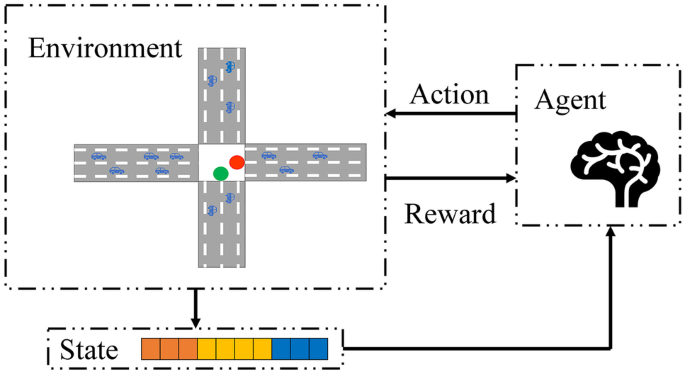

Backdoor Attacks Against Deep Reinforcement Learning Based Traffic Signal Control Systems
Peer-to-Peer Networking and Applications (PPNA), 2022

Abstract
To improve the efficiency of the traffic signal control and alleviate traffic congestion, many researchers focus on applying deep reinforcement learning (DRL) for traffic signal control systems (TSCS). The TSCS consider all the vehicles’ waiting time around the intersection and decrease them so as to alleviate the traffic congestion. However, it has been confirmed that the DRL model is vulnerable to backdoor attacks. In this paper, we propose the first backdoor attack against DRL based TSCS. We define a special drive behavior as malicious input (called trigger). Once the trigger is activated via an attacker, the TSCS will only take into waiting time for the attacker’s vehicle at the intersection. Our empirical experiments show that our proposed backdoor attacks are effective with negligible impact on TSCS’s normal operation.
Resources
Citation
@inproceedings{ZGZDZRZL22,
author = {Heng Zhang and Jun Gu and Zhikun Zhang and Linkang Du and Yongmin Zhang and Yan Ren and Jian Zhang and Hongran Li},
title = {{Backdoor Attacks Against Deep Reinforcement Learning Based Traffic Signal Control Systems}},
booktitle = {{Peer-to-Peer Networking and Applications}},
publisher = {Springer},
year = {2022},
}